Every city has a season it was built for. Seville's is not summer, when the light is white and the streets are best avoided at midday. It is autumn — when the heat lifts, the marble cools, and the city becomes exactly the version of itself worth crossing an ocean for.
From mid-September the temperature settles into the high twenties by day and the evenings turn genuinely pleasant, the kind of pleasant where a terrace dinner runs three hours without anyone noticing. Sevillanos call it la segunda primavera, the second spring, and it shows: theatres reopen their season, restaurants bring back their best tables outdoors, and the pace of the whole city changes register.
For a private trip, this is the window we build the year around. Everything that makes Andalucía worth doing properly — a bodega visit that isn't rushed, a rooftop at golden hour, a table held for as long as you want it — is easiest to arrange well here, precisely because the city has room to breathe again.
In short
- —Best months: September to November. Around 30°C in early September, down near 20°C by November.
- —Sevillanos are back from their own holidays by the first week of September, and the city fills up with them.
- —This is high season by demand, not low season by weather — book monuments and tables ahead.
- —In 2026 the Bienal de Flamenco runs 9 September to 3 October, with over seventy performances across eleven venues.
01
The city exhales
August is the month Seville leaves itself. The heat routinely clears forty degrees, shutters come down over family businesses, and much of the city decamps to the coast, leaving the centre to whoever is left to endure it.
By the first week of September, everyone is back at once. Terraces refill with regulars, restaurants recover their rhythm, and the plazas take on the particular hum of a city that has returned to itself — the sound that first made this a place worth staying in for good. Do not mistake the cooler weather for a quiet season: September and October are when demand for Seville's finest tables, guides and rooms is highest, and the well-run trips are the ones planned months, not weeks, ahead.
02
The golden light
In summer the afternoon light in Seville is nearly white — the sun sits too high, too hard, and everything flattens under it. From October the angle drops, and from mid-afternoon the façades along the Guadalquivir, the Torre del Oro and the bridges into Triana take on a warmth the camera never quite captures but the eye remembers for years.
It is not something we can put a number on, but it is the reason we schedule our longest private walking days in October, and the reason golden hour, not sunset itself, is the hour worth building an evening around.
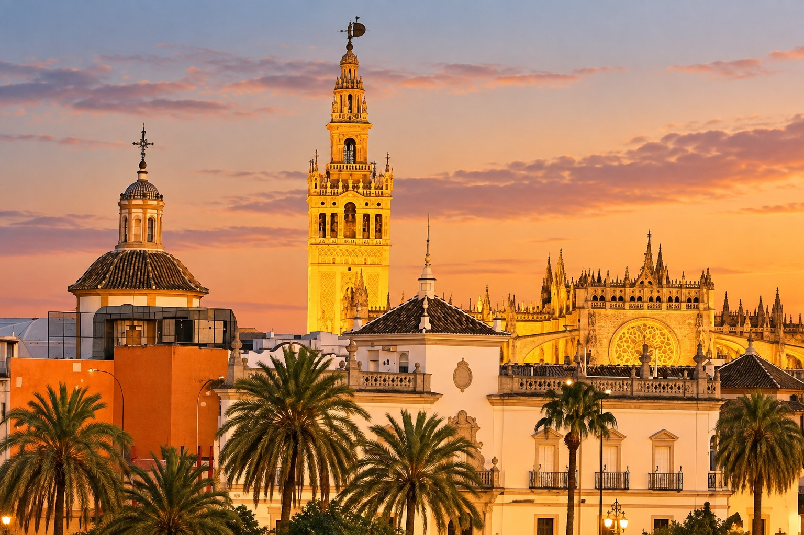
03
On foot, and by bike
Seville has one of the best-built cycling networks in Spain, much of it running along the Guadalquivir past the old Expo site on Isla de la Cartuja and on to the Macarena church. In summer it is simply too hot to use it as transport. From September it becomes one of the fastest, most pleasant ways to see more of the city in less time, and bikes are easy to hire both from shops in the centre and from rental apps.
Walking still teaches you the city best. Start in Santa Cruz, the old Jewish quarter, where the narrow lanes and shaded patios were never built for wheels of any kind, then cross the river into Triana, a neighbourhood with its own identity and its own ceramic tradition. Both reward wandering without a fixed destination — exactly the pace we build into a private first day in the city.
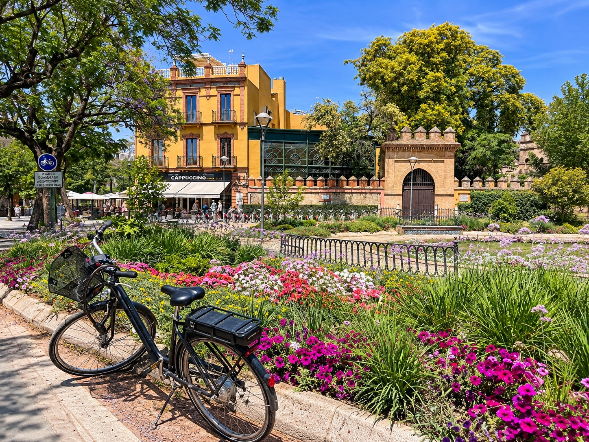
04
A Sunday at Plaza del Museo
On Sundays, local painters set up along Plaza del Museo to show their work — a quiet, little-known ritual that suits an autumn morning far better than any of the city's busier squares.
The square sits right outside the Museo de Bellas Artes, home to one of the finest collections of Spanish Baroque painting outside Madrid. Together they make an unhurried morning that most visitors never find on their own.
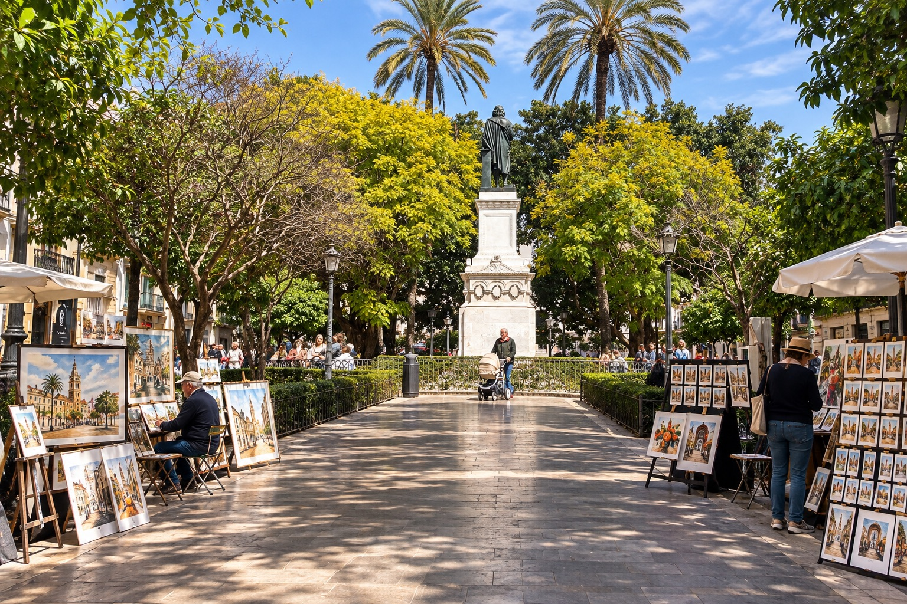
05
Along the river into Triana
Once the heat drops, the riverfront becomes one of the best places for an unhurried walk. Follow the Guadalquivir from the centre, cross into Triana, and keep going. It is a different Seville from the one around the cathedral and Santa Cruz — its own identity, its own ceramic tradition, a more local pace.
Give it time with no fixed endpoint; that is usually when the best corners turn up. If you would rather see the river from the water, our luxury dinner aboard a yacht on the Guadalquivir covers the same stretch a different way.
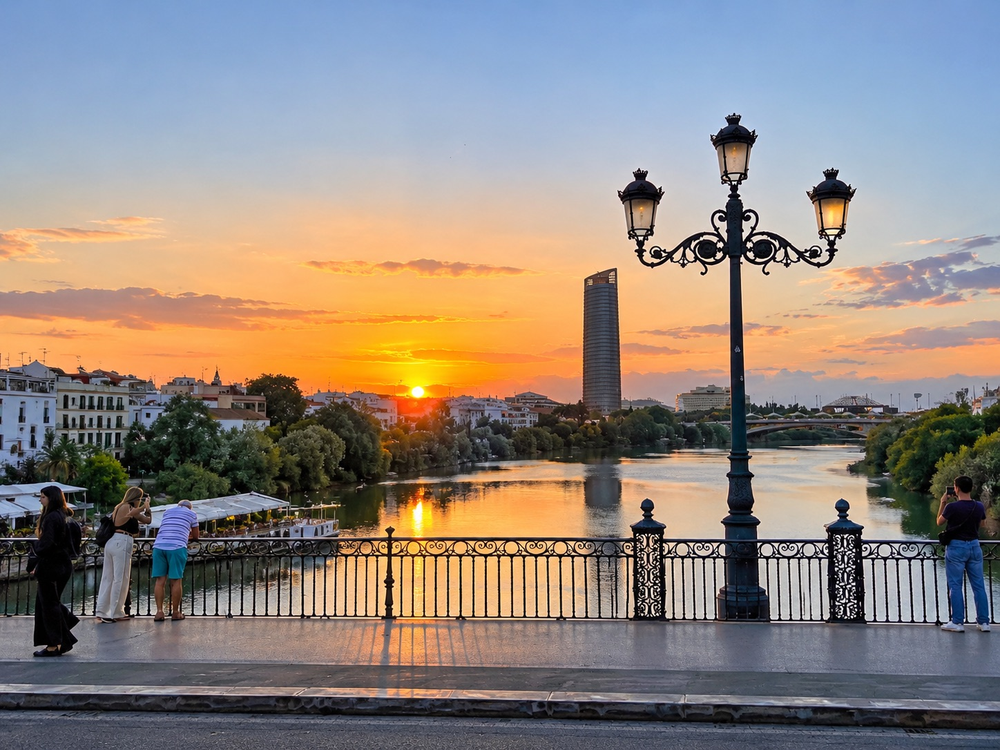
06
Triana's ceramics
While you are in Triana, the Museo de Cerámica de Triana is worth the stop. Set in a former ceramics factory, it explains how this one neighbourhood became the source of the azulejo tiles that cover walls and fountains across the whole city.
It is a small museum, but a fast, useful way to understand why Triana looks and feels the way it does.
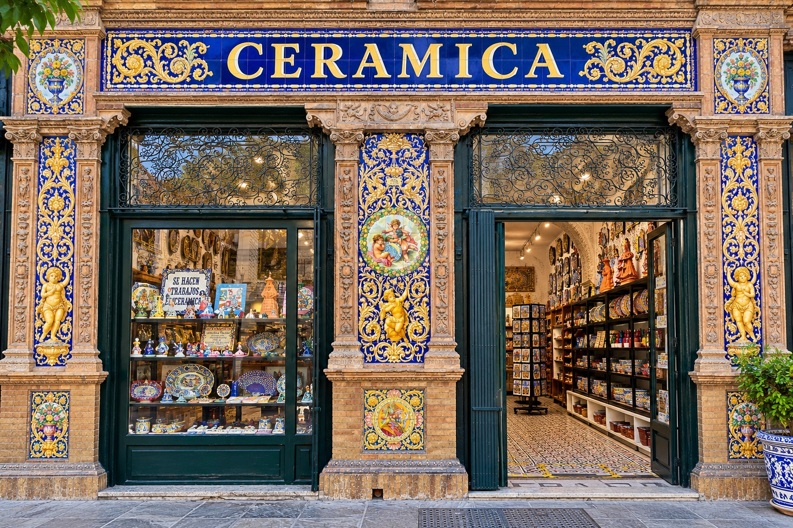
07
Market mornings
Autumn is when the produce turns: wild mushrooms, artichokes, the first game, and the new season's fish arriving heavier at the stalls. The Triana market, at the heart of its own quarter across the river, is the place to see it before it reaches any restaurant table.
Food culture here does not start in the restaurant; it starts with the ingredients and the people who sell them. We build private mornings around exactly this — tasting through the stalls, then carrying it straight into lunch. It is the anchor of our sightseeing, ham, cheese and wine tasting and a natural first stop before any of our tapas experiences.
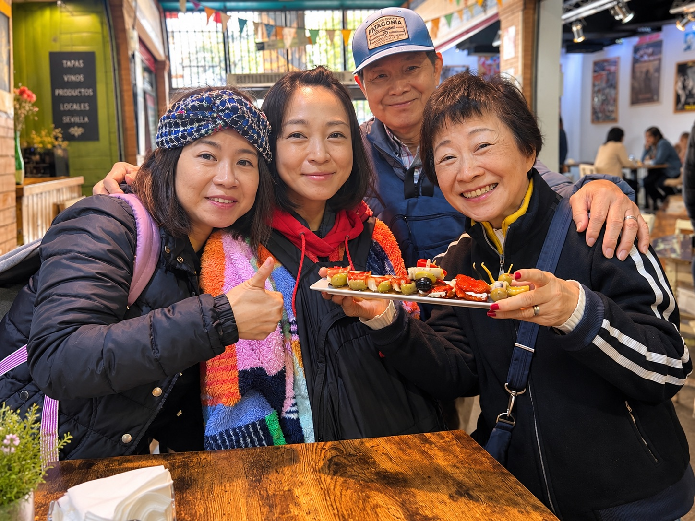
08
Bienal de Flamenco
In even-numbered years, the Bienal de Flamenco de Sevilla — one of the three most important flamenco festivals in the world — runs across the city. In 2026 it opened on 9 September and continues to 3 October, more than seventy performances across eleven venues, among them the Teatro Lope de Vega, the Teatro de la Maestranza, the Real Alcázar and the Teatro Central. Started in 1980, it has grown into the reference point for the art form internationally, mixing its biggest established names with new productions every edition.
Outside those years, flamenco is still very much alive in Seville, most authentically in Triana. Our own preference has always been for something intimate over a large dinner-show format — a small tablao, close enough to feel the floor. It is the reason we built our own tapas and flamenco evening around exactly that room.
09
Above the cathedral
The cathedral's rooftop route, the Cubiertas visit, opens again with the cooler weather and gives one of the very best vantage points in the city: the Giralda at close range, the rooftops of the old town laid out below, and on a clear autumn afternoon, visibility that reaches the hills beyond.
Groups are limited and the visit sells out at short notice through the cathedral's own site — one of the few Seville experiences genuinely worth building the rest of a day around, and one we book well ahead for guests.
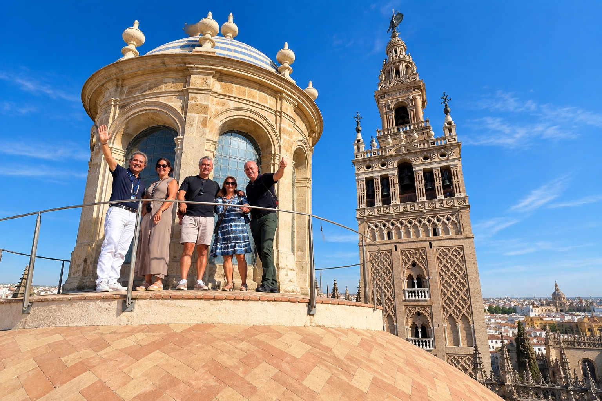
10
Candlelight in a palace
Autumn also brings back Seville's Candlelight Concerts — live music performed by hundreds of candles in rooms built for far grander occasions than a concert. The Casa de Salinas, a sixteenth-century palace in Santa Cruz, and the Salón Real of the Hotel Alfonso XIII are the two settings used most, and the programme ranges from Vivaldi's Four Seasons to film scores and tributes to Queen and the Beatles.
The concerts run about an hour and sell out reliably, so tickets are worth securing as soon as a date is fixed.
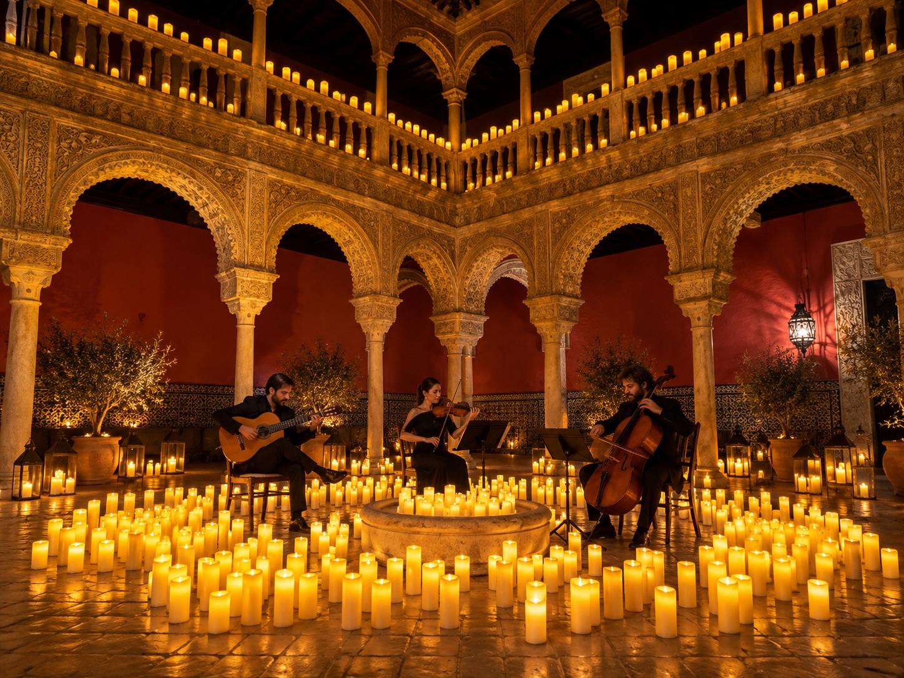
11
Racing history near Jerez
Jerez de la Frontera, a little over an hour from Seville, has a real Formula 1 history. Its circuit opened in 1985 and hosted the Spanish Grand Prix from 1986 to 1990 — the site of Ayrton Senna's famous win over Nigel Mansell by fourteen thousandths of a second in 1986. It returned to the calendar as the European Grand Prix in 1994 and 1997, the latter remembered as one of F1's most dramatic title deciders, when Michael Schumacher collided with Jacques Villeneuve while fighting for the championship.
There is no fixed F1 race there today; the circuit now hosts the Spanish MotoGP, usually in spring, and occasional private team test days with no set date. Worth checking the circuit's own calendar if racing interests you. Either way, Jerez pairs naturally with our sherry bodega and Cádiz day trip.
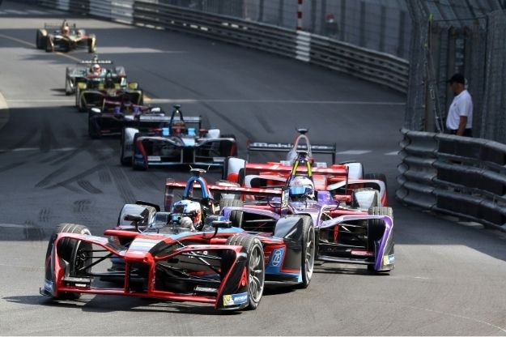
12
A quieter palace
Away from the Alcázar crowds, the Palacio de las Dueñas is one of Seville's finest palaces and one of our favourite stops for guests who have already seen the main sights — long the residence of the Dukes of Alba, birthplace of the poet Antonio Machado, and built around a patio thick with orange trees, on a scale far more intimate than the city's grander monuments.
It is exactly the kind of stop that suits a slower, unhurried autumn day through the city, and one we weave into private itineraries once the main sights are done.
13
A tapas dinner over several hours
What autumn gives back, above anything else, is the terrace. Dinner stops being a single dish and becomes several small ones over several hours, moving between two or three addresses if the evening calls for it — sherry included, since it belongs at the table far more than its reputation abroad suggests.
For a private evening done properly, this is where a guide earns their place: the right order, the right sequence of bars, a table that is actually held rather than queued for. It is what our private tapas tour and our horse carriage and tapas evening in Santa Cruz are built to deliver.
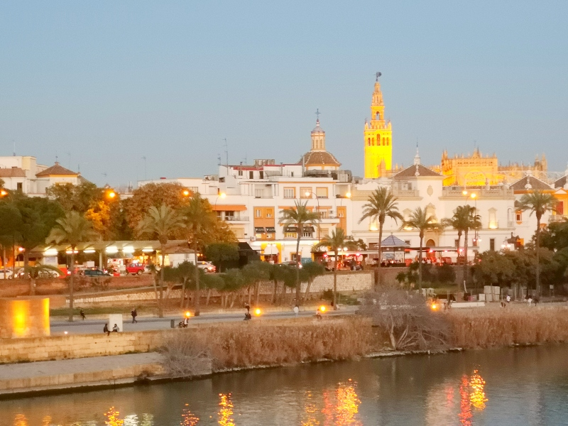
14
An evening at the Alcázar
On certain autumn evenings the Real Alcázar opens for a theatrical night visit, its courtyards and halls brought to life by actors in period costume moving through the palace's own history. It is a different building after dark than the one guests see at midday, and one of the few Seville evenings that genuinely needs no restaurant afterward to feel complete.
Dates are limited and announced only a season ahead, so it is worth checking before you fix a date for your visit. We are glad to build an evening around it when it is running during your stay.
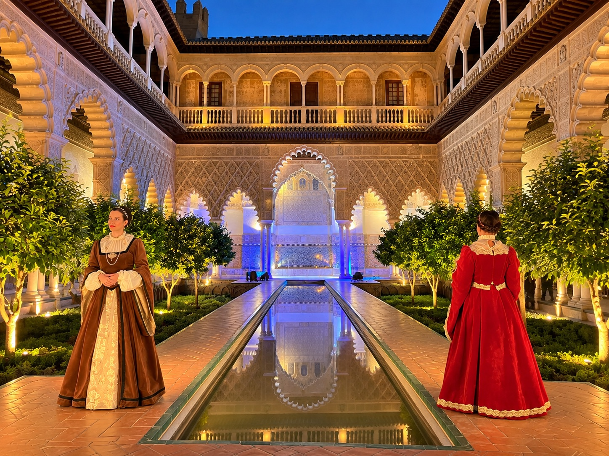
15
Beyond the city
Autumn may be even better than summer for exploring the region around Seville. Córdoba, with the Mezquita and its old quarter, is far more comfortable to walk once the heat has broken. Jerez de la Frontera pairs sherry, horses and the old bodegas with a stop in Cádiz on the coast — our sherry bodega and Cádiz day trip covers both in a single day, priced on request through our partner Naturanda.
Inland, the Sierra de Aracena is at its best once the heat has gone: oak woodland, black Iberian pigs still out on the dehesa, villages and a landscape starting to turn, and a visit to the ham producers that is worth the drive on its own. Details in our Aracena Iberian ham day trip. It is one of the real advantages of a Seville base: the whole of Andalucía sits within reach.
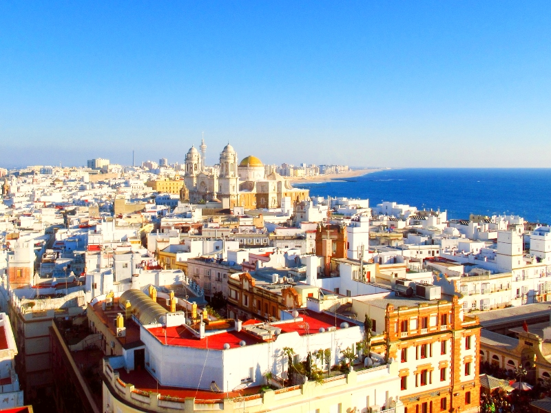

16
Temperature through the season
Early September still runs warm, often into the low thirties by day, but the air has already lost the flat, still heat of July and August. Each week from there the daytime high drops a little further: high twenties through mid-September, mid-twenties by early October, and down into the high teens and low twenties by November.
Evenings cool faster than the days do. By October a warm afternoon can give way to a genuinely cool night, and November mornings can start close to 10°C before the day warms up. It is the swing between the two, more than any single number, that shapes how the day should be planned.
17
What to pack
Layers matter more than any single garment. A light shirt or dress works through the middle of the day, but a jacket or sweater earns its place in the bag as soon as the sun drops — particularly in October and November, and particularly on the river or up on the cathedral roof, where the wind adds a real edge.
Comfortable, broken-in walking shoes matter here more than in most cities — the old town is cobbled and best covered on foot. Sun protection is still worth packing through September; by late October it is no longer the priority it was in summer, but a hat still helps at midday.
Frequently asked questions
{{ f.q }}+
{{ f.a }}

Written by
Gunvor Guttormsen
Licensed tour guide · Seville
Gunvor is an officially licensed guide based in Seville and the founder of Flavors of Andalucia. She guides in English and Norwegian, and also in Swedish and Danish, and has spent years walking the markets, bodegas and back streets she writes about here.
More about Gunvor